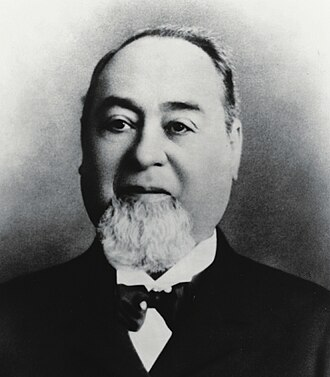
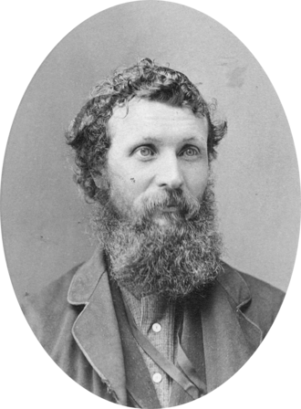
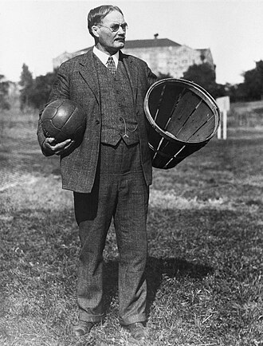

The inductees
Ten people, ten arrivals. Filter by where they came from, when they arrived, or what they did. The search box matches the name, origin and summary text on the cards below — it does not search inside the profiles.
Recently checked discoveries are listed on New at the Museum.
Historical photographs via Wikimedia Commons. Image sources & reuse status
The roll, in order of arrival
Showing all 10.
-

1847Levi Strauss
Buttenheim, Bavaria → United States
Came from Bavaria as a teenager in 1847. Sold cloth to miners, then backed the patent for the rivet that made the blue jean.
Business Profile ready -

1849John Muir
Dunbar, Scotland → United States
Immigrated to Wisconsin at eleven, helped win Yosemite its national park and founded the Sierra Club.
Conservation Profile ready -

Early 1890sJames Naismith
Almonte, Ontario, Canada → United States
Invented basketball in a Massachusetts gym in December 1891, to keep students busy in winter.
Sport and education Profile ready -
 c. 1893
c. 1893
Irving Berlin
Russian Empire → United States
Arrived as a refugee child around 1893 and wrote the songs the country sang back to itself.
Music Profile ready -
1908
Bob Hope
Eltham, London, England → United States
Came from England at four and became the first civilian honorary veteran of the U.S. armed forces.
Entertainment Profile ready -
 1933
1933
Albert Einstein
Ulm, Germany → United States
Was abroad when Hitler took power in 1933 and never went back. Took the oath of citizenship in 1940.
Science Profile ready -
 1935
1935
I. M. Pei
Guangzhou, China → United States
Came to study for a few years and stayed more than eighty. Put a glass pyramid in the courtyard of the Louvre.
Architecture Profile ready -
 1937
1937
Hedy Lamarr
Vienna, Austria → United States
A film star who patented a frequency-hopping system for guiding torpedoes.
Film and invention Profile ready -
 1948
1948
Madeleine Albright
Prague, Czechoslovakia → United States
Fled Hitler as a small child and Stalin at eleven. Became the first woman to lead the State Department.
Public service Profile ready -
 1961
1961
Celia Cruz
Havana, Cuba → United States
Left Cuba in 1960 and never went back. Became the Queen of Salsa in exile.
Music Profile ready
Arrival years and places have been checked against the holding institutions’ records. Where our figure differs from one published elsewhere, the reason is given on that person’s page.